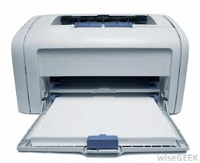
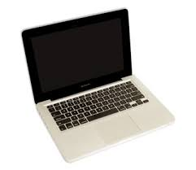

| product image | information | price |
| computer A computer is a device that can be instructed to carry out arbitrary sequences of arithmetic or logical operations automatically. The ability of computers to follow generalized sets of operations, called programs, enables them to perform an extremely wide range of tasks. Such computers are used as control systems for a very wide variety of industrial and consumer devices. This includes simple special purpose devices like microwave ovens and remote controls, factory devices such as industrial robots and computer assisted design, but also in general purpose devices like personal computers and mobile devices such as smartphones. The Internet is run on computers and it connects millions of other computers. Since ancient times, simple manual devices like the abacus aided people in doing calculations. Early in the Industrial Revolution, some mechanical devices were built to automate long tedious tasks, such as guiding patterns for looms. More sophisticated electrical machines did specialized analog calculations in the early 20th century. The first digital electronic calculating machines were developed during World War II. The speed, power, and versatility of computers has increased continuously and dramatically since then. | 10000 | |
|  | printer A printer is a device that accepts text and graphic output from a computer and transfers the information to paper, usually to standard size sheets of paper. Printers vary in size, speed, sophistication, and cost. In general, more expensive printers are used for higher-resolution color printing. Personal computer printers can be distinguished as impact or non-impact printers. Early impact printers worked something like an automatic typewriter, with a key striking an inked impression on paper for each printed character. The dot-matrix printer was a popular low-cost personal computer printer. It's an impact printer that strikes the paper a line at a time. The best-known non-impact printers are the inkjet printer, of which several makes of low-cost color printers are an example, and the laser printer. The inkjet sprays ink from an ink cartridge at very close range to the paper as it rolls by. The laser printer uses a laser beam reflected from a mirror to attract ink (called toner ) to selected paper areas as a sheet rolls over a drum. | 10000 |
|  | laptop A laptop computer, sometimes called a notebook computer by manufacturers, is a battery- or AC-powered personal computer generally smaller than a briefcase that can easily be transported and conveniently used in temporary spaces such as on airplanes, in libraries, temporary offices, and at meetings. A laptop typically weighs less than 5 pounds and is 3 inches or less in thickness. Among the best-known makers of laptop computers are IBM, Apple, Compaq, Dell, and Toshiba. Download this free guide.Laptop computers generally cost more than desktop computers with the same capabilities because they are more difficult to design and manufacture. A laptop can effectively be turned into a desktop computer with a docking station, a hardware frame that supplies connections for peripheral input/output devices such as a printer or larger monitor. The less capable port replicator allows you to connect a laptop to a number of peripherals through a single plug. | 10000 |